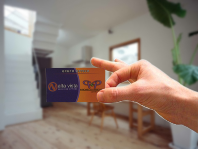

Sin anteojos
Con anteojos
Popularmente conocida como vista cansada, la Presbicia es un problema fisiológico que aparece aproximadamente a los 40 años, y se caracteriza por la dificultad de ver objetos en visión próxima de forma no nítida, y se debe a una pérdida progresiva del tono de la musculatura ciliar y flexibilidad del cristalino.
La presbicia se compensa con lentes oftálmicas positivas, en anteojos de cerca, anteojos ocupacionales o lentes multifocales.
Sin anteojos
Con anteojos
Es un problema visual, ametropía o defecto refractivo, generado por la focalización de la imagen delante de la retina. Una persona miope se caracteriza por ver los objetos a distancia emborronados pero los objetos cercanos con nitidez, aunque a una distancia muy próxima de cerca.
Para una visión nítida, el punto focal de los rayos luminosos debe converger en un área específica de la retina denominada fóvea, donde se encuentran las células fotorreceptoras. En el caso de la miopía, el punto focal se forma antes, lo cual puede acontecer por varios motivos:
- exceso de poder dióptrico positivo del cristalino;
- exceso de curvatura de la córnea y, por consiguiente, de su poder dióptrico positivo;
- excesivo alargamiento del globo ocular,
- combinación de los factores anteriores.
Para la compensación de esta ametropía, se utilizan lentes oftálmicas negativas o cóncavas, que llevan el punto focal de los rayos de luz al plano de la retina. O bien con lentes de contacto negativas, con el mismo efecto óptico.
Sin anteojos
Con anteojos
Es un problema visual, ametropía o defecto refractivo, generado por la focalización de la imagen detrás de la retina. Una persona hipermétrope tiene dificultad visual en visión próxima, y son síntomas característicos el dolor de cabeza, ojos rojos y cansancio visual.
Las principales causas de hipermetropía son la disminución del largo axial del globo ocular y la disminución de la potencia dióptrica de la córnea.
De acuerdo a la edad del paciente los efectos producidos por la hipermetropía van variando. En un niño, pueden aparecer dolores de cabeza más acentuados en la edad escolar, y a veces posible aparición de estrabismo convergente bilateral, en muchos casos esa hipermetropía va disminuyendo progresivamente con la edad, llegando en algunos casos a la emetropía. En el adulto, luego de cierto tiempo de lectura, existe cierta dificultad en continuar la tarea. Puede aparecer enrojecimiento de los ojos y picazón o escozor, además de frecuentes dolores de cabeza.
Para la compensación de la hipermetropía se utilizan lentes oftálmicas convexas o positivas, capaces de converger los rayos de luz al plano de la retina, o bien con lentes de contacto positivas.
Sin anteojos

Con anteojos
Es un problema visual, ametropía o defecto refractivo causado por un formato irregular de la córnea o del cristalino, y tiene como consecuencia la formación de más de una imagen dentro del ojo, en distintos planos focales. Una persona con astigmatismo, tiene una visión poco nítida y distorcionada de todos los objetos, tanto próximos como a distancia.
Los efectos que producen el astigmatismo varian de acuerdo al grado del mismo; en pequeños grados, sólo puede existir astenopia (cansancio visual) con esfuerzo prolongado de visión ya que el paciente intenta obtener una imagen nítida a través de la acomodación, conduciendo esto a dolores de cabeza.
Esta ametropía se compensa con lentes oftálmicas esféricos cilíndricas o cilíndricas que proporcionan la formación de una única imagen sobre la fóvea, o con lentes de contacto blandas tóricas, blandas de corrección atípica refractiva, Rígidas Gas Permeables, y esclerales.